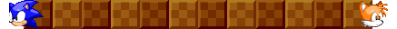

Welcome to the un-offical Sonic Robo Blast 2 website!
Download it now!
Miss the old site? That's okay, we miss it too. You can visit it via clicking the button below or typing the url: https://www.srb2.org .
Head off to SRB2.org!
News

The 2.2 Official Soundtrack Is Now Live!
Rob Tisdell - December 13, 2019
Hey all!
Hey all, a few people have been asking for this, and now it’s finally ready! Head on over to the Soundtrack page to grab it!